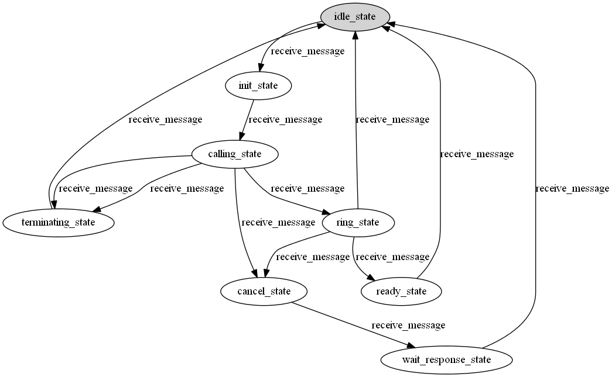

A test data generator for Robot Framework.
Also testers complain test automation can't help them to find bugs. Due to normally all case will be executed in repeatable sequence, it is so-called Pest Killer effect.
And also we found ugly bugs that users report that somehow were missed by all your ATDD-, TDD- and manual exploratory testing?
This tool is here to define your test input combination in models, so you only need to maintain models, and it will generate Robot Case automatically for you.
It gives you the ability to generate a huge number of tests that can go through a very vast number of similar (or not so similar) test scenarios. Also the generated test data and test sequence will be in random order, so it can give more possibility to avoid Pest Killer effect.
If you know Model-Based Testing or automata theory: With Robogenerator you define an extended finite state machine (in a python grammer) that represents a set of tests. Robogenerator also contains algorithms that can be used to generate real executable Robot Framework tests from a Robogenerator model.
If you know Combinatorial Testing or like data driven testing: With Robogenerator you can define sets of data and rules about that data, that can be used to generate data driven tests (and also keyword driven tests). This allows you to keep your data in compact sets and let the system generate the real test data vectors from there.
It will use pure python grammar, there are advantage and disadvantage about this.
Here I would like to introduce this tool by several actual examples
1.Here is an example machine (using combinatorial techniques) that can generate tests for Volume Partitioning Example:
documentation ='''The case is to create and delete all kinds of volumes'''
suite_setup ='Connect to System'
suite_teardown='Disconnect from System'
force_tags ='''owner-*** team-* phase-RT '''
parameters_template = {'type': [ "Primary", "Logical", "Single", "Span", "Stripe", "Mirror", "RAID-5"]
, 'size':[ "10", "100", "500", "1000", "5000", "10000", "40000"]
, 'format_method':[ "quick","slow"]
,'file_system':['FAT', 'FAT32', 'NTFS']
,'cluster_size':['512', '1024', '2048', '4096', '8192', '16384', '32768', '65536']
,'compression':['on', 'off']
}
parameters = parameters_template
output_filename ='create_and_delete_all_kinds_of_volumes.html'
case_name_template = 'create and delete volume with different parameters'
case_step_template = '''create_and_delete_volume_test ${type} ${size} ${format_method} ${file_system} ${cluster_size} ${compression}'''
An example of a valid rule line:
def is_valid_combination(row):
n=len(row)
if n>=len(parameters):
if row['file_system'] =="FAT" and row['size']>4096:
return False
if row['file_system'] =="FAT32" and row['size']>32000:
return False
return True
random ----generate test data randomly
DFS---- deep first search, generate all of possible combinations
pairwise--- generate test data in pairwise algorithm
smart-random-------generate test data randomly, and in next run, it will only select un-tested combination in all possible combination
Could indicate how many test case to generate
normal---- normal Robot Test Case
atdd--------use Robot Template method, so the input/output model in test case would be more visible
The test case name would adapt with actual data combination
The output filename could be indicated
the output file could be indicated inside model file, or indicated as a command-line argument.
The output file could be in TXT, HTML,or other valid Robot Case format,but if you need the format to be html, then you should have Robot installed with version above 2.7.
The case step should be a keyword which has been defined inside Robot Resource file or python test library
it could be well adapted to different hardware topology. You could use your own test library to control how to use this feature
Assume the model filename is create_and_delete_volume_test.py , and randomly generate 10 test case, output file is show.html
robogenerator - g random –t 10 –o show.html –ip ..*.* create_and_delete_volume_test.py
1. How to describe our MBT test model Here is another example machine (using model-based testing with finite state machine):
documentation ='''The case is to do SIP Service test in cost-effective way''' suite_setup ='Connect to SUT' suite_teardown='Disconnect from SUT' force_tags ='''owner-shuyolin team-AreaCI phase-RT requirement-area-SS req-PRS_None_Req''' library ="sip_service_lib.py" library = library.replace('\\','/') output_filename ='SIP_Service_Test.html' case_name_template = 'SIP Service Test' idle_state=init_state=calling_state=base_trial_state=terminating_state=cancel_state =ring_state ={} idle_state = {'name':'idle_state', 'step':(state_should_be,'idle_state'), 'actions':[(receive_message,('${OFFHOOK_SIGNAL}',),None,'init_state')]} init_state = {'name':'init_state', 'step':(state_should_be,'init_state'), 'actions':[(receive_message,('${CALLING_SIGNAL}',),None,'calling_state')] } calling_state = {'name':'calling_state', 'step':(state_should_be,'calling_state'), 'actions':[(receive_message,('${TIMEOUTB}',),None,'terminating_state'), (receive_message,('${TIMEOUTA}',),None,'terminating_state'), (receive_message,('${CALL_PROCEEDING}',),None,'ring_state'), (receive_message,('${REJECT}',),None,'cancel_state')] } terminating_state = {'name':'terminating_state', 'step':(state_should_be,'terminating_state'), 'actions':[(receive_message,('${200_BYE}',),None,'idle_state')]} cancel_state = {'name':'cancel_state', 'step':(state_should_be,'cutover_complete_state'), 'actions':[(receive_message,('${200_Cancel}',),None,'wait_response_state')] } ring_state = {'name':'ring_state', 'step':(state_should_be,'ring_state'), 'actions':[(receive_message,('${200}',),None,'ready_state'), (receive_message,('${REJECT}',),None,'idle_state'), (receive_message,('${CANCEL}',),None,'cancel_state')] } ready_state = {'name':'ready_state', 'step':(state_should_be,'ready_state'), 'actions':[(receive_message,('${BYE}',),None,'idle_state')] } wait_response_state = {'name':'wait_response_state', 'step':(state_should_be,'wait_response_state'), 'actions':[(receive_message,('${487_Invite}',),None,'idle_state')] } state_graph = [idle_state,init_state,calling_state,terminating_state,cancel_state,ring_state,ready_state,wait_response_state] accepting = state_graph initial = 'idle_state'
- different strategy to test
ShortestPath ----- Generate case according to China Postman graph algorithm, which could balance test feedback cycle and test coverage StateCoverage ------- When need to select next step, it will select the minimum state as their next State ActionNameCoverage ------- Select least covered Action Name To test DynamicRandom ------------- Randomly select next State but try to avoid already tested
Could indicate how many steps inside one test case
Examples
- generate test case with shortest path cost,assume each step has same weight,and output to show.html
- robogenerator SIP_Call_Service.py –-strategy ShortestPath –o show.html
- generate test case with ActionName coverage, and generate 1 case, each case will limit test steps to 100
- robogenerator SIP_Call_Service.py –-strategy ActionNameCoverage –t 1 –n 100 –o show.html
If you have installed tool GraphViz, http://www.graphviz.org/Download..php then you could use robograph (a tool inside robogenerator) to generate state-activity graph by your state-machine model.
At first
robograph -l name SIP_Call_Service # without .py suffix, only show action name which will cause the transition to happen
then there will be a file SIP_Call_Service.dot in current directory
- It will show following picture：
- 
Also you use Gvedit.exe to open file SIP_Call_Service.dot, and edit the .dot file with yourself.
From the picture we could see, there are a lot of possible sequence to execute all possible test case, if we don’t have tool help, it will be difficult for us to design test procedure which could balance test cost and test coverage.
From Python Package Index:
pip install robogenerator
From source:
git clone https://github.com/blueenergy/robogenerator cd robogenerator python setup.py install
After this you should have a commandline tool called 'robogenerator' available. See 'robogenerator --help' for commandline tool usage.
Rules can be used to remove variable combinations that should not be used in test generation.Actually it is a python function inside which you can define anything you want.
This is followed by the Robot Framework steps that should be executed when in that state.
This can be followed by an actions block definition.
An actions block is actually a key/value pair,the key is 'actions', and the value is actually a list of transition description. Each transition is actually a tuple with four arguments.
1st argument refers to action keyword that would be executed in that transition. You could use pure python style or Robot Keyword style.
2nd argument refers to argument that would be used with action keyword.
3rd argument refers to a entrance function that would be validated before the transition could actually happen.
4th argument refers to the next state that action keyword will bring us to.
An example of a valid state definition:
ring_state = {'name':'ring_state',
'step':(state_should_be,'ring_state'),
'actions':[(receive_message,(),'Message equal to 200','ready_state'),
(receive_message,(),'Message equal to REJECT','idle_state'),
(receive_message,(),'Message equal to CANCEL','cancel_state')]
}
In above example, it means in ring_state, our test case will continue to receive message, and it will change to different state depend on the message it has received.For example:
* In own state, it will check current state is really 'ring state' * if it has received message 200, then it will switch to 'ready state'. * if has received message REJECT, then it will switch to 'idle state'. * if it has received message CANCEL, then it will switch to 'cancel state'.
In state-machine based case generator, if you need to use 'ShortestPath' strategy, then probably you need to re-compile a java library.
1.find where the robogenerator is installed
3.javac CPP.java
You need JDK installed to complete above operation. The reason why you need to do this is because a java algorithm is called during case generation.